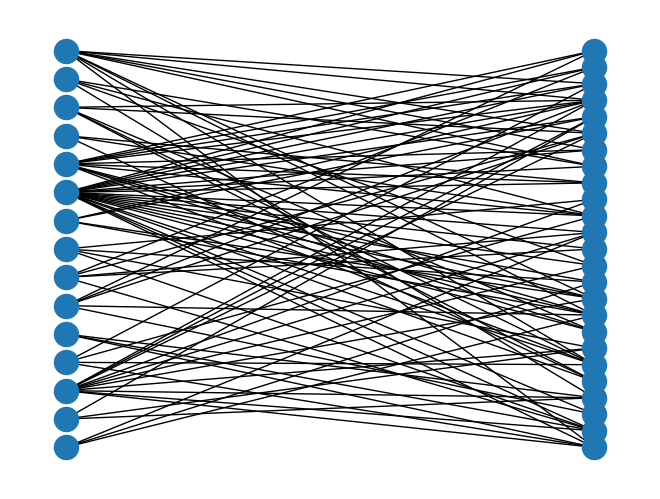
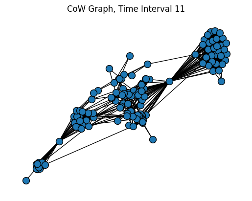

import networkx as nx
import pandas as pdSpecial Network Types
Directed Networks
As we begin to discuss information networks like citations networks, semantic networks, and especially the Web, being able to work with directed graphs becomes an essential skill.
DiGraph Objects
Unlike signed networks, which have no special designation in NetworkX, directed networks use a special DiGraph() object that retains directed information about the source and target of each edge.
# Read a DiGraph from a file
# This is actually a "MultiDiGraph", with multiple edges between nodes
# This file contains the neural network of C. Elegans
D = nx.read_gml("../data/celegansneural.gml")
print(D)MultiDiGraph with 297 nodes and 2359 edgesSome files (especially .gml format) will already indicate that the network is directed. With other files and objects, like edgelists or Pandas DataFrames, you’ll need to read or convert the file using create_using=nx.DiGraph to make sure that the DiGraph constructor is used to create the object.
# Import an edgelist of high school student interaction data as a DiGraph
HS = nx.read_weighted_edgelist("../data/contact-high-school-proj-graph.txt", create_using=nx.DiGraph)
print(HS)DiGraph with 327 nodes and 5818 edgesIn-Degree and Out-Degree
When you create DiGraph() objects, they include methods for in-degree and out-degree as well as standard, undirected degree.
in_degree = D.in_degree() # Calculate in-degree
out_degree = D.out_degree() # Calculate out-degree
degree = D.degree() # Calculate degree
# Add attributes to Graph
nx.set_node_attributes(D, dict(in_degree), "in_degree")
nx.set_node_attributes(D, dict(out_degree), "out_degree")
nx.set_node_attributes(D, dict(degree), "degree")
# Convert nodes to a dataframe
nodes = pd.DataFrame.from_dict(D.nodes, orient='index')
nodes.reset_index(level=0,names="neuron_id",inplace=True)
nodes| neuron_id | in_degree | out_degree | degree | |
|---|---|---|---|---|
| 0 | 1 | 2 | 9 | 11 |
| 1 | 51 | 24 | 10 | 34 |
| 2 | 72 | 41 | 39 | 80 |
| 3 | 77 | 33 | 21 | 54 |
| 4 | 78 | 35 | 21 | 56 |
| ... | ... | ... | ... | ... |
| 292 | 298 | 0 | 1 | 1 |
| 293 | 299 | 0 | 1 | 1 |
| 294 | 300 | 0 | 1 | 1 |
| 295 | 301 | 0 | 1 | 1 |
| 296 | 302 | 0 | 1 | 1 |
297 rows × 4 columns
Strongly Connected Components
You can easily find out if a DiGraph is strongly connected.
nx.is_strongly_connected(D)FalseUsing the undirected version of this function will return an error.
nx.is_connected(D)--------------------------------------------------------------------------- NetworkXNotImplemented Traceback (most recent call last) Cell In[6], line 1 ----> 1 nx.is_connected(D) File ~/networks/.venv/lib/python3.12/site-packages/networkx/utils/decorators.py:784, in argmap.__call__.<locals>.func(_argmap__wrapper, *args, **kwargs) 783 def func(*args, __wrapper=None, **kwargs): --> 784 return argmap._lazy_compile(__wrapper)(*args, **kwargs) File <class 'networkx.utils.decorators.argmap'> compilation 59:3, in argmap_is_connected_55(G, backend, **backend_kwargs) 1 import bz2 2 import collections ----> 3 import gzip 4 import inspect 5 import itertools File ~/networks/.venv/lib/python3.12/site-packages/networkx/utils/decorators.py:87, in not_implemented_for.<locals>._not_implemented_for(g) 83 def _not_implemented_for(g): 84 if (mval is None or mval == g.is_multigraph()) and ( 85 dval is None or dval == g.is_directed() 86 ): ---> 87 raise nx.NetworkXNotImplemented(errmsg) 89 return g NetworkXNotImplemented: not implemented for directed type
To find out if a directed graph is connected simply by the presence or absence of an edge, use the “weakly connected” functions.
nx.is_weakly_connected(D)TrueThere are similar functions to get strongly connected components.
strong_comp = list(nx.strongly_connected_components(D))# Count the number of strongly connected components
len(strong_comp)57# Get the largest strongly connected component
largest = max(strong_comp, key=len)
# How many nodes are there in this component
len(largest)239# Compare to the number of nodes in
# the largest weekly connected component
weak_comp = list(nx.weakly_connected_components(D))
len(max(weak_comp, key=len))297Paths
Many of the path functions work the same for directed graphs, but using the directed definition of a path rather than the undirected definition.
nx.shortest_path(D, '1', '10')['1', '90', '4', '10']But certain concepts, like average shortest path length, don’t make sense unless your graph is strongly connected. The following will throw an error.
nx.average_shortest_path_length(D)--------------------------------------------------------------------------- NetworkXError Traceback (most recent call last) Cell In[13], line 1 ----> 1 nx.average_shortest_path_length(D) File ~/networks/.venv/lib/python3.12/site-packages/networkx/utils/decorators.py:784, in argmap.__call__.<locals>.func(_argmap__wrapper, *args, **kwargs) 783 def func(*args, __wrapper=None, **kwargs): --> 784 return argmap._lazy_compile(__wrapper)(*args, **kwargs) File <class 'networkx.utils.decorators.argmap'> compilation 81:3, in argmap_average_shortest_path_length_78(G, weight, method, backend, **backend_kwargs) 1 import bz2 2 import collections ----> 3 import gzip 4 import inspect 5 import itertools File ~/networks/.venv/lib/python3.12/site-packages/networkx/utils/backends.py:551, in _dispatchable._call_if_no_backends_installed(self, backend, *args, **kwargs) 545 if "networkx" not in self.backends: 546 raise NotImplementedError( 547 f"'{self.name}' is not implemented by 'networkx' backend. " 548 "This function is included in NetworkX as an API to dispatch to " 549 "other backends." 550 ) --> 551 return self.orig_func(*args, **kwargs) File ~/networks/.venv/lib/python3.12/site-packages/networkx/algorithms/shortest_paths/generic.py:415, in average_shortest_path_length(G, weight, method) 413 # Shortest path length is undefined if the graph is not strongly connected. 414 if G.is_directed() and not nx.is_strongly_connected(G): --> 415 raise nx.NetworkXError("Graph is not strongly connected.") 416 # Shortest path length is undefined if the graph is not connected. 417 if not G.is_directed() and not nx.is_connected(G): NetworkXError: Graph is not strongly connected.
You can approximate average shortest path length with a subgraph of the largest strongly connect component.
nx.average_shortest_path_length(D.subgraph(largest))3.9943215780035866Or you could convert the directed network to undirected and then calculate average shortest path length (if this results in a connected graph). But keep in mind that this produces a completely different kind of measure that doesn’t directly apply to your original directed graph!
G = nx.Graph(D)
nx.average_shortest_path_length(G)2.455318955318955You can also check to see the paths that exist between two strongly connected components. This is known as an edge boundary, or a cut set.
# Get the edge boundary between the two largest components in the graph
# First get the second largest component
second_largest = sorted(strong_comp, key=len, reverse=True)[1]
# Then get the edge boundary
for edge in nx.edge_boundary(D, largest, second_largest):
print(edge)('3', '121')
('7', '121')
('7', '102')
('89', '121')
('89', '102')
('37', '121')
('37', '102')
('161', '102')
('6', '102')
('90', '121')
('90', '102')
('41', '121')
('41', '102')
('18', '102')
('21', '102')
('98', '121')
('98', '102')
('108', '121')
('17', '121')
('30', '102')
('36', '121')
('36', '102')
('101', '121')
('38', '121')
('9', '121')
('171', '121')
('8', '121')
('8', '102')
('20', '121')
('100', '121')
('120', '121')The code above shows you all of the edges going from the largest component to the second largest component.
Bipartite Networks
Bipartite networks, or affiliation networks, have two separate sets of nodes and are typically used to describe group affiliations. You’ll find the complete documentation on the NetworkX website.
Importing Bipartite Graphs
import networkx as nx
import pandas as pd
# Note you will need a separate set of algorithms
from networkx.algorithms import bipartite# Read in an edgelist
# Data from: http://konect.cc/networks/brunson_club-membership/
B = bipartite.read_edgelist("../data/brunson_club-membership/out.brunson_club-membership_club-membership")
print(B)Graph with 40 nodes and 95 edgesB.nodes(data=True)NodeDataView({'person_1': {'bipartite': 0}, '1': {'bipartite': 1}, '2': {'bipartite': 1}, '3': {'bipartite': 1}, 'person_2': {'bipartite': 0}, '4': {'bipartite': 1}, 'person_3': {'bipartite': 0}, '5': {'bipartite': 1}, '6': {'bipartite': 1}, 'person_4': {'bipartite': 0}, '7': {'bipartite': 1}, '8': {'bipartite': 1}, 'person_5': {'bipartite': 0}, 'person_6': {'bipartite': 0}, '9': {'bipartite': 1}, '10': {'bipartite': 1}, '11': {'bipartite': 1}, 'person_7': {'bipartite': 0}, 'person_8': {'bipartite': 0}, '12': {'bipartite': 1}, '13': {'bipartite': 1}, 'person_9': {'bipartite': 0}, '14': {'bipartite': 1}, 'person_10': {'bipartite': 0}, 'person_11': {'bipartite': 0}, 'person_12': {'bipartite': 0}, 'person_13': {'bipartite': 0}, 'person_14': {'bipartite': 0}, '15': {'bipartite': 1}, 'person_15': {'bipartite': 0}, 'person_16': {'bipartite': 0}, 'person_17': {'bipartite': 0}, 'person_18': {'bipartite': 0}, 'person_19': {'bipartite': 0}, 'person_20': {'bipartite': 0}, 'person_21': {'bipartite': 0}, 'person_22': {'bipartite': 0}, 'person_23': {'bipartite': 0}, 'person_24': {'bipartite': 0}, 'person_25': {'bipartite': 0}})# Get node sets for later:
bottom_nodes, top_nodes = bipartite.sets(B)
print(bottom_nodes){'person_23', 'person_18', 'person_2', 'person_8', 'person_4', 'person_14', 'person_7', 'person_24', 'person_16', 'person_19', 'person_1', 'person_20', 'person_9', 'person_12', 'person_15', 'person_11', 'person_5', 'person_21', 'person_3', 'person_17', 'person_6', 'person_13', 'person_22', 'person_10', 'person_25'}Degree and Betweenness
degree = bipartite.degree_centrality(B, top_nodes)
betweenness = bipartite.betweenness_centrality(B, top_nodes)
print(degree){'2': 0.12, '10': 0.12, '9': 0.44, '15': 0.16, '12': 0.12, '4': 0.2, '14': 0.2, '3': 0.16, '11': 0.16, '1': 0.84, '5': 0.44, '8': 0.12, '7': 0.2, '13': 0.16, '6': 0.36, 'person_23': 0.3333333333333333, 'person_18': 0.3333333333333333, 'person_2': 0.13333333333333333, 'person_8': 0.26666666666666666, 'person_4': 0.2, 'person_14': 0.3333333333333333, 'person_7': 0.2, 'person_24': 0.2, 'person_16': 0.4, 'person_19': 0.3333333333333333, 'person_1': 0.2, 'person_20': 0.2, 'person_9': 0.13333333333333333, 'person_12': 0.26666666666666666, 'person_15': 0.3333333333333333, 'person_11': 0.13333333333333333, 'person_5': 0.2, 'person_21': 0.2, 'person_3': 0.2, 'person_17': 0.3333333333333333, 'person_6': 0.26666666666666666, 'person_13': 0.4666666666666667, 'person_22': 0.26666666666666666, 'person_10': 0.2, 'person_25': 0.2}Drawing
nx.draw(B, pos=nx.bipartite_layout(B, top_nodes))
Dynamic Networks
Dynamic, or temporal, networks are a special subset of multilayer networks that allow you to examine changes in a network over time. NetworkX has no functionality for temporal networks, but it’s straightforward to extend its multilayer functions.
What makes a network dynamic or temporal is typically an edge attribute. There are three types of temporal edge attributes:
- a specific timestamp for each edge, usually as a datetime object
- a beginning and ending time for each edge, usually as two separate attributes
- a time interval, usually an integer indicating an event-based time transition
It’s often possible (and necessary) to convert attributes from one timeframe to another. Sometimes the time attributes will be present on a single layer graph, and sometimes every edge will have more than one time attribute. The latter situation is especially common for graphs with time intervals: the likelihood of an edge being in more than one time interval is high.
Creating Multigraph Objects
import networkx as nx
import pandas as pd
import matplotlib.pyplot as pltA Multigraph is sometimes automatically created when your data has more than one of the same edge. Consider the Correlates of War dataset from the signed graph exercises:
MG = nx.read_pajek('../data/Cow_edit.net')
print(MG)MultiGraph with 180 nodes and 41295 edgesNote that there are more than \(180^2\) edges here, which would be the maximum possible in a standard static graph. In this graph, the Correlates of War dataset uses integers to label different time intervals.
You can also create both directed and undirected multigraphs with the nx.Multigraph() and nx.MultiDiGraph() objects. See the NetworkX documentation for more details and example code.
Understanding Keys
Multigraphs keeps track of the different layers of the graph using keys. A key is a special attribute that can only be accessed in a multigraph.
# Display the first 10 nodes of the multigraph, with keys
list(MG.edges(keys=True))[:10][('AFG', 'IRN', 0),
('AFG', 'IRN', 1),
('AFG', 'IRN', 2),
('AFG', 'IRN', 3),
('AFG', 'IRN', 4),
('AFG', 'IRN', 5),
('AFG', 'IRN', 6),
('AFG', 'IRN', 7),
('AFG', 'IRN', 8),
('AFG', 'IRN', 9)]Once you have the individual keys, you could use the subgraph functions to isolate just one time interval of the graph:
# Get edges from only interval 11 of the graph
edges11 = [(s, t, k) for s, t, k in MG.edges(keys=True) if k == 11]
SG = nx.edge_subgraph(MG, edges11)
plt.title("CoW Graph, Time Interval 11")
pos = nx.forceatlas2_layout(SG, distributed_action=True, max_iter=200)
nx.draw(SG, pos=pos, node_size=100, edgecolors="black")
plt.show()